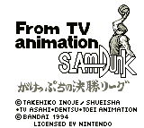

Slam Dunk (VGB)

This is a basketball game based on the popular anime. It isn't a pure
basketball game though; it uses a strange card system to make your plays. A
card allows you to pass, shoot, or dribble around a person. I don't know
enough Japanese to figure out what card does what. The game allows you to go
through a story mode(?) or just play a single game.
Return to Emulator Table of Contents
Last Modified 11 Nov 1996
Created 11 Nov 1996
Luis A. Cruz
cruzl@ccs.neu.edu